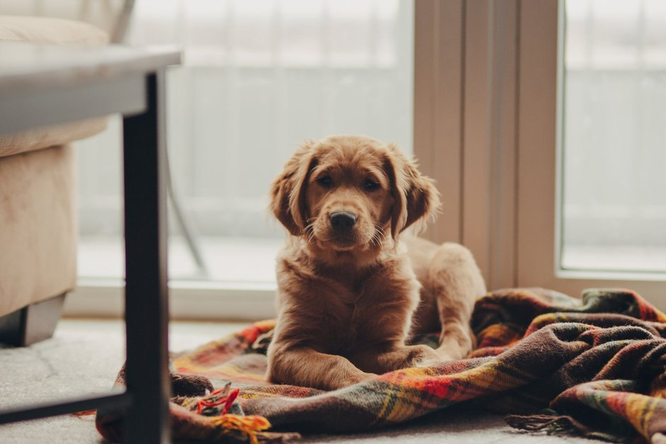

Comment préparer votre logement pour l'accueil de votre nouveau chien ou chat

Photo: Josh Hild / Pexels
Préparer la maison avant l'arrivée de votre chien ou de votre chat vous évite des dangers et rend les premiers jours plus calmes. Voici une liste simple, à faire dans l'ordre.
1. Sécuriser la maison
- rangez hors de portée les médicaments, les produits ménagers, le chocolat et les petits objets avalables ;
- fermez les poubelles et attachez ou cachez les fils électriques ;
- vérifiez que les fenêtres et les balcons sont sécuritaires, avec moustiquaire solide ou filet ;
- retirez ou mettez hors de portée les plantes toxiques : demandez à votre vétérinaire la liste des plantes dangereuses, par exemple les lis pour les chats.
2. Prévoir un coin à lui
Installez un lit ou une caisse, avec une couverture, dans un endroit calme, à l'écart du passage. Les premiers jours, ce sera sa base de repos et de sécurité.
3. Acheter le matériel de base
- gamelles en inox ou en céramique, pour l'eau et la nourriture ;
- aliment adapté à son âge, avec celui qu'il mangeait chez l'éleveur ou au refuge, pour commencer ;
- pour le chat : bac à litière, litière, pelle et griffoir ;
- pour le chien : collier ou harnais, laisse, médaille d'identité et sacs pour les besoins ;
- caisse de transport et quelques jouets adaptés à sa taille.
4. Planifier la santé
Prenez rendez-vous chez le vétérinaire dans les premiers jours : examen, vaccins, vermifuge, prévention des parasites et identification (puce électronique). Pour un adulte, demandez ses dossiers au refuge ou à l'ancien propriétaire.
5. Prévoir les règles de la maison
Décidez à l'avance qui nourrit, qui promène et quelles pièces seront interdites. Posez des barrières si nécessaire. Cela évite de donner des signaux contradictoires.
6. Le grand jour
Laissez l'animal explorer à son rythme, en gardant l'ambiance calme. Limitez les visites, surveillez toujours les enfants avec lui, et gardez la même routine de repas et de sorties dès le premier jour.
7. Les premières semaines
Pour un chien, commencez la propreté et les premiers apprentissages avec des récompenses. Pour un chat, présentez-le d'abord à une seule pièce, puis agrandissez peu à peu son territoire. Présentez les autres animaux de la maison progressivement, de façon encadrée, et consultez votre vétérinaire si l'animal refuse de manger ou s'il semble malade.
Produits recommandés
En tant que Partenaire Amazon, je réalise un bénéfice sur les achats remplissant les conditions requises.